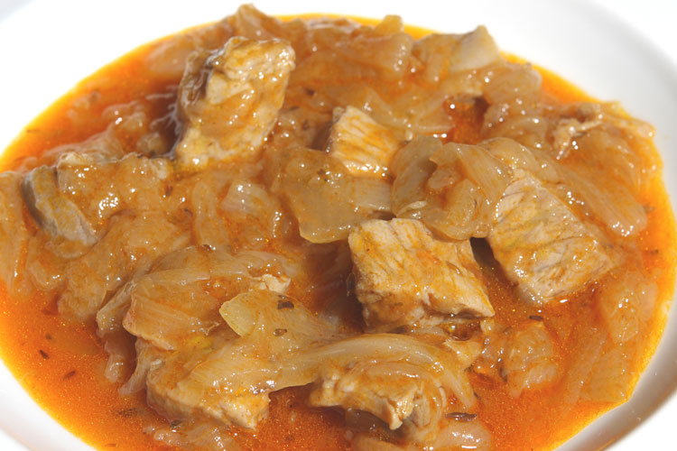

Gastronomia
La gastronomía de Barbate se enmarca dentro de la gastronomía de la provincia de Cádiz, centrada en los productos del mar, en especial el atún de almadraba. Entre los diferentes platos que ofrece pueden destacarse los siguientes:
Atún encebollado
Se realiza con la parte del atún conocida como "mormo". Es el plato más destacado de la zona.
Mojama
Producto obtenido a partir del lomo del atún, que es sometido a un proceso de curado mediante sazonado y secado al aire. Barbate, junto a Isla Cristina (Huelva), concentra la mayor parte de la producción andaluza de mojama, y desde el año 2015 cuenta con Indicación Geográfica Protegida (IGP).

Fideos
Pescado azul que pertenece a la familia de los escómbridos, abunda en el Mediterráneo y en el océano Atlántico, y tiene una carne blanca deliciosa que se presta a distintas preparaciones ya sea guisada, con cebolla, en escabeche o al horno (y también es muy común encontrarla en conserva).

Recortes de mojama en tomate
Qwertyuiopasdfghjklñzxcvbnm

Morena frita
Pescado magro de carne blanca, algo gelatinosa y de sabor peculiar.

Atun
tuntun